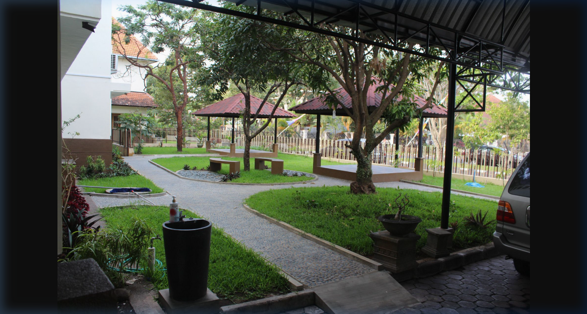
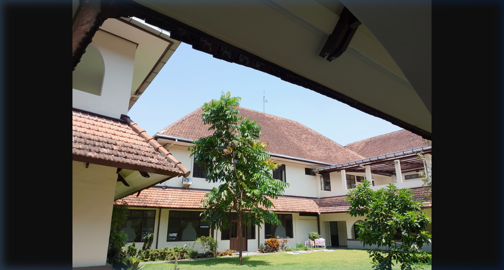
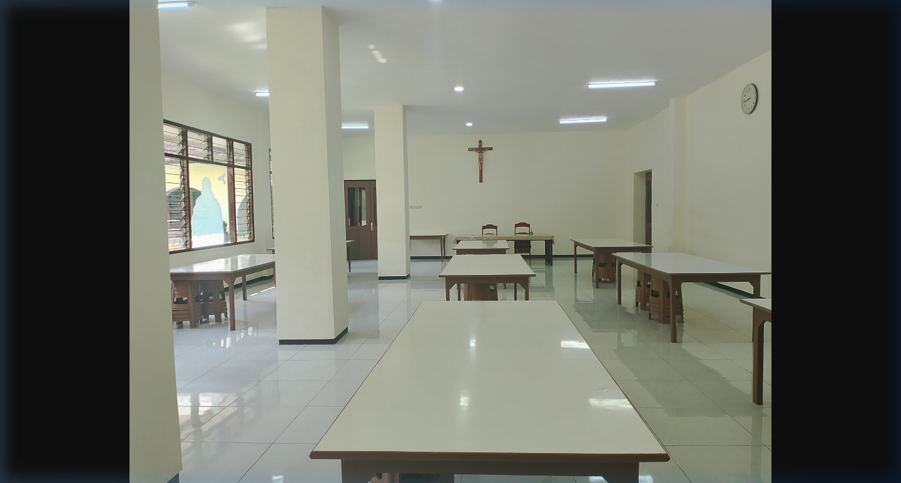
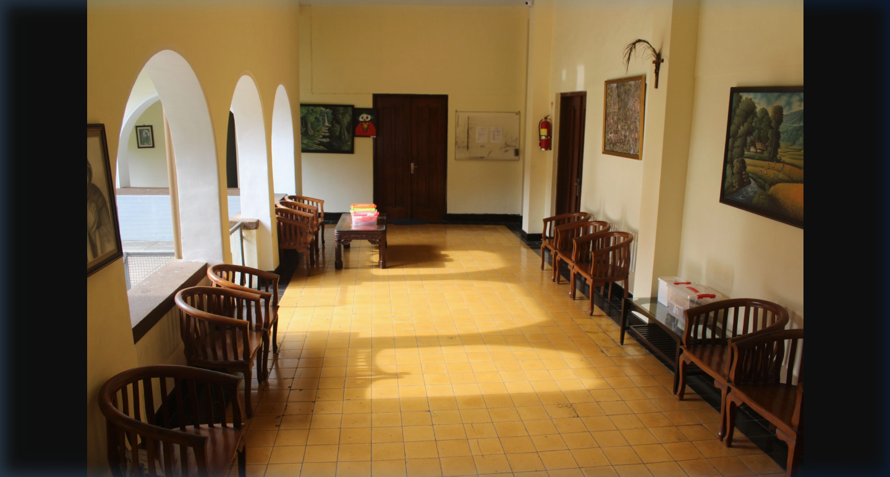
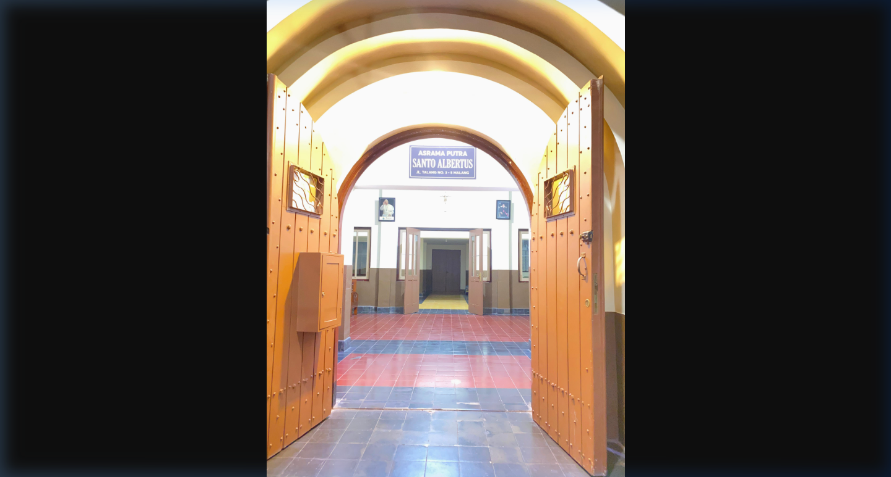

Galeri Foto
Kehidupan di Asrama Putra
Sekilas pandang suasana asrama putra St. Albertus Malang.






Yayasan Sancta Maria
"Belajar, berdoa, bersaudara dan melayani segiat-giatnya untuk kemuliaan Tuhan"
Belajar, berdoa, bersaudara dan melayani segiat-giatnya
untuk kemuliaan Tuhan.
Komunitas pendampingan dan pendidikan kaum muda sebagai jalan transformasi diri menuju pribadi yang utuh dan dewasa berlandaskan ideologi negara Pancasila dan nilai-nilai Spiritualitas Karmel.
Berdiri sejak tahun 2018, kami terus bertumbuh dalam pelayanan pendampingan kaum muda.
Kami menyediakan lingkungan yang nyaman dan kondusif untuk mendukung perkembangan akademik dan karakter siswa.
Ruang doa & kapel tersedia untuk menunjang kehidupan rohani siswa setiap hari.
Ruang belajar ber-AC dan ruang les yang nyaman untuk mendukung prestasi akademik.
Tersedia ruang peralatan musik untuk mengembangkan bakat dan minat seni siswa.
Perpustakaan dengan koleksi buku lengkap untuk mendukung kebutuhan literasi siswa.
Kamar tidur bangsal ber-AC untuk kelas X dan XI, plus kamar pribadi untuk kelas XII.
Akses WiFi untuk belajar, listrik, dan air bersih tersedia sepanjang waktu.
Makan tiga kali sehari, cuci pakaian, dan pembersihan ruang umum oleh petugas.
Taman hijau dan asri dengan gazebo nyaman untuk bermain dan berdiskusi bersama.
Fasilitas kesehatan dan kamar perawatan tersedia untuk menjaga kesehatan siswa.
Sekilas pandang suasana asrama putra St. Albertus Malang.





Para pembina berpengalaman siap mendampingi perkembangan rohani dan intelektual siswa.
Pendampingan rohani dan spiritual dari para imam yang berpengalaman.
Pembinaan karakter dan pengawasan keseharian oleh para suster berdedikasi.
Bimbingan akademik dan kedisiplinan dari para bruder yang terlatih.
Pendampingan dari pembina awam profesional untuk kegiatan ekstra dan sosial.
Cerita nyata dari para siswa dan alumni yang pernah merasakan kehidupan di Asrama Putra St. Albertus.
"Selama di asrama, saya belajar banyak tentang disiplin dan tanggung jawab. Para pembina selalu sabar membimbing kami."
"Fasilitas lengkap dan lingkungan yang nyaman membuat saya bisa fokus belajar. Makanan juga enak setiap hari!"
"Kehidupan rohani di asrama sangat mendalam. Saya diajarkan untuk berdoa dan melayani, bukan hanya belajar akademik."
Jawaban atas pertanyaan yang paling sering ditanyakan seputar pendaftaran dan kehidupan asrama.
Asrama Putra St. Albertus terbuka untuk siswa putra SMA Katolik St. Albertus Malang dari kelas X hingga XII. Pendaftaran dibuka setiap tahun ajaran baru.
Informasi biaya dapat berubah setiap tahun ajaran. Silakan hubungi kontak yang tertera untuk informasi biaya terbaru dan ketentuan pembayaran.
Ya, setiap siswa wajib mematuhi tata tertib asrama yang mencakup jadwal belajar, jam malam, ibadah, dan kegiatan bersama. Aturan dibuat untuk membentuk karakter disiplin dan tanggung jawab.
Penggunaan gadget diatur secara ketat. Siswa diperbolehkan membawa ponsel namun hanya dapat digunakan pada waktu tertentu yang sudah ditentukan untuk mendukung fokus belajar.
Prosedur pendaftaran dimulai dengan menghubungi nomor yang tertera, mengisi formulir, dan mengikuti wawancara dengan pembina asrama. Pendaftar yang diterima akan diinformasikan lebih lanjut melalui WhatsApp atau telepon.
Ikuti kegiatan dan update terbaru kami langsung dari @asrama_st.albertus.
Hubungi kami atau isi formulir di bawah ini untuk informasi lebih lanjut mengenai pendaftaran asrama putra.
Di bawah naungan:
Daftarkan diri Anda ke Asrama Putra ST. Albertus dan rasakan pengalaman bertumbuh bersama komunitas yang penuh kasih.
Hubungi Kami